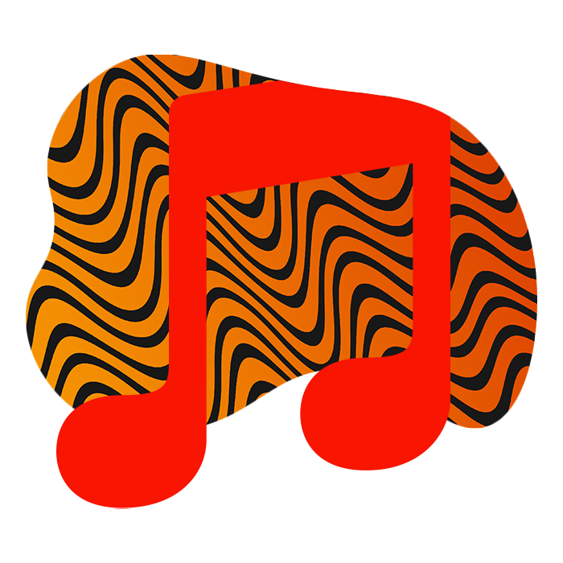

Well, I'll have to Photoshop it I guess...
Photoshop is my primary tools I use for my projects, even This one! But I also use it to edit some photos I make.
Lmao, xD.
This one, is my favorite of all my tools I use. Adobe XD is simple, fast and intuitive. I make there concepts of almost anything I can, from webpages to PDFs.


Music is the best.
Music is the only most wonderful tool I use for my work. It boosts my workflow and slip me into the right mood.